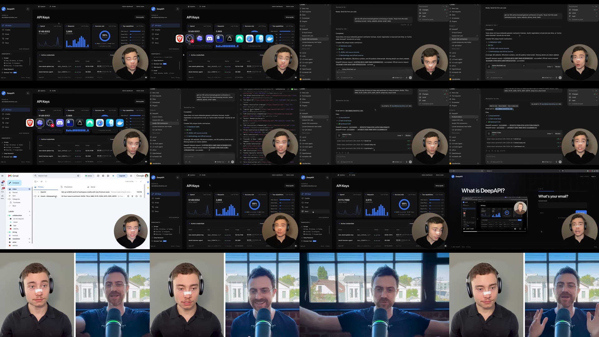
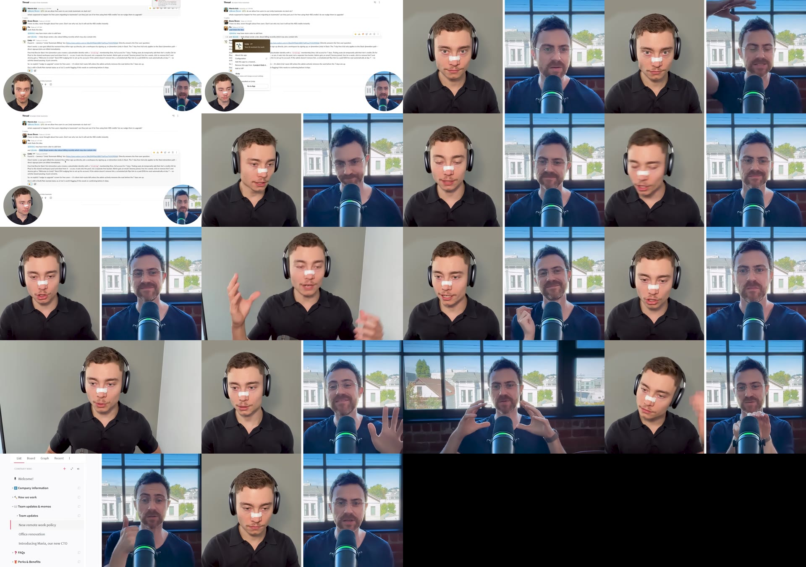
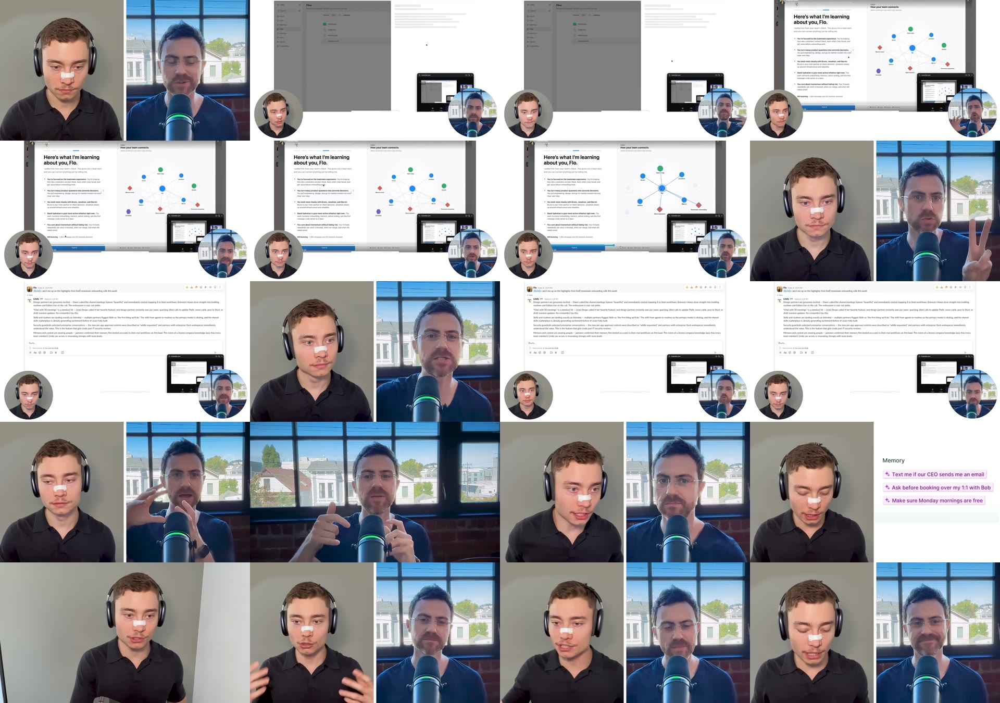
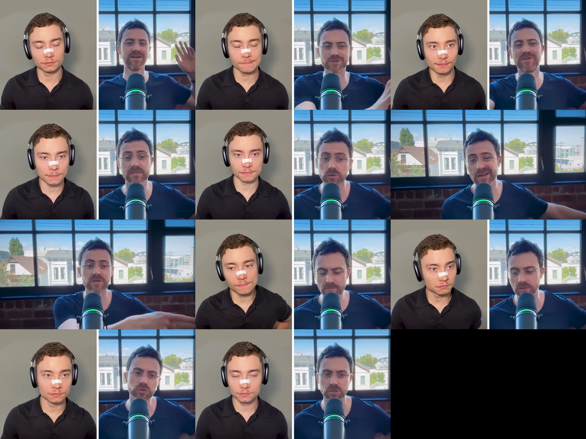
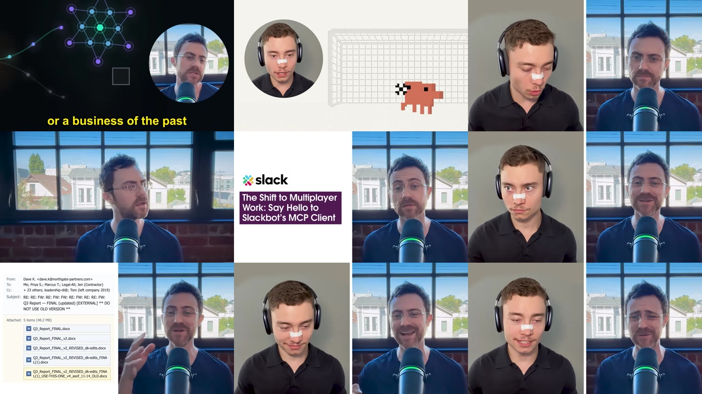

Third-party recording -- behavioural and screen forensics -- 2026-08-10, 45m25s -- no self-review overlay
Redaction note, added for publication -- not run output.
This report is otherwise unmodified run output. Two clauses are withheld and marked in place below,
both in Limitations: they described the run's own operating environment and the instructions given
to the run -- host load, and a scoping instruction -- rather than anything about the recording or
its participants. The finding each clause supported is published in full. The companion
_autopsy.md carries the same redactions plus three more that have no counterpart in
this report.
Defect note, added for publication -- not run output. The
run's face-to-name mapping is inverted, and every visual attribution below inherits
the error. The nose-tape / headphones / plain-background speaker is David, the host;
the beard-and-glasses speaker at the broadcast mic is Flo Crivello, the guest. Three
independent lines of evidence settle it, none of which the run used. (1) At 00:00:37.98 the guest
says "I don't know if you're old enough David" -- addressed to David, and the two men differ visibly
in age, so the younger of the two is David. (2) The Deep API dashboard in the sponsor segment reads
SIGNED IN david@davidondrej.com, the only webcam on screen through that segment is the
nose-taped speaker, and the ad closes "click the first link below the video" -- a channel owner's
line. (3) Both sibling runs of this source disagree with this document and agree with each other: the
watch-video knowledge document names the host "David Ondrej" and files the segment as
"the video's own paid sponsor", and watch-video-max says "the interviewer runs a
sponsored segment". The run went wrong by reading the wrong one of the two webcams inset beside a
screen-share -- "Here's what I'm learning about you, Flo" is Flo's own account, shown during Flo's
share, with both cameras on screen. What does not change: the measured numbers never depended on
which face carried which name, and the splice finding itself stands -- only the person delivering the
ad is wrong. Flagged rather than rewritten; these examples are unmodified run output.
This is a guest-expertise interview, not a balanced conversation, and every measurable axis points the same way: David asks short, well-aimed questions; Flo answers at length, often for minutes at a stretch, while David's contribution is mostly prompts and brief agreement. That shape is normal for the format. What stands out is how uniform the imbalance is -- no phase of the 45 minutes shows a different dynamic, whether it's the opening exchange, the two product demos, the personal-workflow discussion, the AGI tangent, or the close.
The most interesting structural finding is not in the words at all. A produced, screen-shared sponsor/product segment for a tool called "Deep API" is spliced directly into what a transcript-only read would present as one continuous Flo answer about agentic software. Read as text, a philosophical claim about agent adoption flows without a marked break into a scripted call-to-action with a dashboard screen-share and pricing card. Only the frames show the register change. (The document reads this as a Flo answer; it is the host's own sponsor read -- see the defect note above.)
Speech rate sits 215-272 wpm in every phase (baseline conversational is 120-180 wpm), with no phase reading slower or more relaxed than any other. Silence detection at a 1.0s threshold found essentially zero qualifying pauses everywhere it completed. Read together, this describes a tightly cut edit that trimmed breathing room throughout, not a conversation that happens to be brisk in places.
Defect note, added for publication -- not run output. The chart above is wrong in three ways, and it is left as the run drew it. Its own caption says 10 question-free blocks of 60s or more; only four green marks are actually drawn, and they account for 545s of the 970.6s the text reports. Two further marks are present in the markup but invisible -- one has zero width, the other zero opacity. And the fourth visible mark, labelled in the source as 00:19:01-20:25, is plotted at roughly 31:38 on the axis. The phase labels also collide at the left edge, where P0 through P3 all fall inside the first 12% of the timeline. The numbers in the text and in the tiles below are the measured ones and are unaffected; only this drawing of them is faulty. Flagged rather than redrawn -- these examples are unmodified run output.
Reaction-reading is limited by format -- two single-person webcam feeds, not a shared frame, so neither speaker's live reaction to the other is directly visible. Within that limit: the close reads as warm and low-friction (David visibly smiling, open hand gestures; Flo more reserved but not uncomfortable). David's short interjections mostly land as genuine engagement rather than pure filler -- "Do you have a team David?" / "Yes." / "Are you experiencing the same thing?" is a real if brief exchange (the run files this as one of David's interjections; the line is at 00:01:20 and is spoken to David, not by him -- see the defect note above), and he explicitly grants the first screen-share ("Yeah, of course.") before Flo starts narrating. NULL whether Flo's aside "I promise to your viewers this isn't set up" reassured or slightly undercut the demo's spontaneity is not answerable from the available evidence.
HYPOTHESIS No reliable percentage split is reportable -- no diarization was run and no platform transcript export exists for this third-party recording. A content-signal proxy (address-by-name / host-question phrasing) returned an implausible 98.6%/1.4% split and is explicitly rejected here rather than reported as fact. The monologue-block statistic above is the defensible substitute.
| Phase | Duration | Words | wpm (blended) |
|---|---|---|---|
| P0 teaser | 23.6s | 107 | 272.3 |
| P1 opening exchange | 131.4s | 512 | 233.8 |
| P2 Deep API segment | 172.8s | 621 | 215.6 |
| P3 product-demo block | 317.2s | 1185 | 224.1 |
| P4 extended discussion | 2043.2s | 8078 | 237.2 |
| P5 close | 36.8s | 140 | 228.5 |
Conversational baseline is 120-180 wpm. Every phase in this recording sits above that range with no meaningful contrast between phases -- read with the silence result below, this points to edit-driven pacing rather than natural variation. MEASURED
| Window | Duration sampled | Qualifying silences (>=1.0s) |
|---|---|---|
| Opening span (P0-P3 start) | 00:00-09:10 | 1 event, 1.03s (the teaser-to-interview cut) |
| Hydration-demo window | 09:10-11:20 | 0 events |
| Close | 44:30-45:25 | 0 events |
| Mid-conversation (bulk, P4) | 11:20-44:30 | 1 event, 1.07s (00:32:44.5) |
Whole-recording total: 2 qualifying silences (>=1.0s) in 45m25s. Every screen-share cut and dozens of speaker-turn boundaries produced no gap the detector could register at this threshold -- the strongest single piece of evidence for the tightly-cut-edit reading above. MEASURED
MEASURED, floor only: 10 "uh", 3 "um", whole file, not split by speaker or phase. Whisper's VAD strips most fillers, so this undercounts, likely severely.
NULL Tiers 2 (pitch/energy) and 3 (categorical emotion) were not run -- both require diarization to be valid on mixed-mic two-speaker audio, and no diarization was performed for this run.

The segment reads as a produced ad unit -- title card, pricing detail, explicit URL call-to-action -- rather than an improvised live demo, and it is delivered by the same on-screen narrator as the two later product demos (matched by face and background). HYPOTHESIS the "david"-prefixed key names could indicate the account belongs to David rather than the on-screen narrator; this is not resolved anywhere on screen and is logged as unconfirmed. (It is resolved on screen: the same dashboard reads "SIGNED IN david@davidondrej.com", and the on-screen narrator here is David -- see the defect note above.)


An earlier watch-video-max knowledge document for
this same file labels this hydration-demo content "src 12:40-13:30". Recalibrated against this video's
own timeline, the actual on-screen segment runs 00:09:12-00:10:45 -- about 3.5 minutes earlier. Content
match is otherwise exact; this reads as a timeline-reference mismatch from the earlier pass, exactly the
failure mode the skill warns about (offset is not a constant across passes). Anyone citing the earlier
document's timestamp for this content should use the corrected one.


NULL Typing-activity and on-screen-error metrics do not apply -- none of the three screen-shares show a code editor or live-coding surface.
Visual observation, cause unresolved: Flo (David -- see the defect note above) has a visible strip of tape or a nasal strip across the bridge of his nose in every frame of the recording. Stated as an observed fact only; cause is NULL.